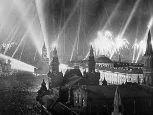

Как же празднуют 23 февраля?
"Это день, когда мы отдаем должное всем тем, кто охраняет мир и безопасность нашей Родины."
23 февраля отмечают и крутят советское кино про войну на телеканалах. Некоторые предпочитают отметить праздник на свжем воздухе, а именно хоят по паркам мира,парков победы, но также и по другим паркам, чтобы отметить победу Красной армии в 1918 году.
Чаще организуют встречи с ветеранами, проводятся мероприятия в военных частях и памятниках, где почитают павших зпащитников павших зпащитников.
Многие отмечают 23 февраля в кругу семьи, устраивают совместные обеды или ужин где говорят о защитниках отечества.
